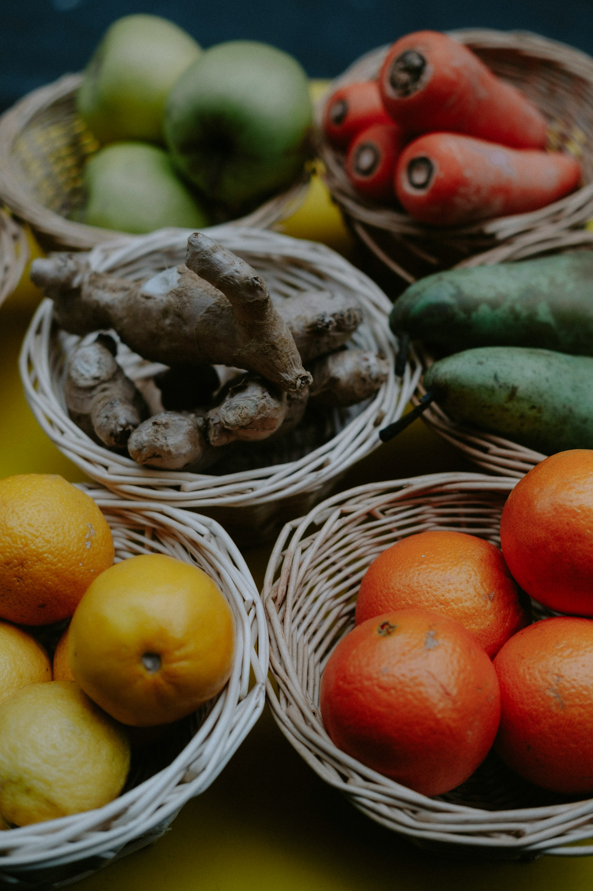

Food security
Field Priority Board
Urgent needs work better when every route has a clear owner.

Water access
Storage repair, clean containers, and partner planning.
Volunteer route
Hands-on packing shifts with specific times and materials.
View shiftsCampaign Ledger
Campaigns show the useful unit before asking for support.

Food route
Family meal packs
Supplies, packing time, and local handoff notes grouped into one route.
Water access
Clean storage repair
Repair materials and partner updates listed before support.
Field Stories
Stories should show the route, not just decorate the page.

"When donors can see what moved, trust becomes practical."
Kindario field team



Ways To Help
Pick the kind of support the field team can use now.
Donate routes organize support around food, water, classroom supplies, and field notes.
Volunteer Dispatch
Volunteer requests should be specific enough to act on.
VOLUNTEER
Sat 08:30
Food packing line
Route preparation Join shiftTue 15:00
School kit sort
Classroom materials Join shift
Questions
Clear answers before people commit time or money.
How does Kindario decide which needs appear first?
Needs are ranked by urgency, partner readiness, budget clarity, and whether support can move the next practical step.
Can volunteers help without donating?
Yes. Volunteer shifts, transport support, sorting days, and local introductions are listed as separate routes.
What does a donor receive after supporting?
Supporters receive campaign updates and field-note summaries when a local team closes an activity.